Glavne Vežbe
Ovo su vezbice bez sprava, za to kako rade sprave, pogledaj sekciju "sprave"
Klikni na vezbu koja te zanima :3
GORNJI DEO TELA
CHEST
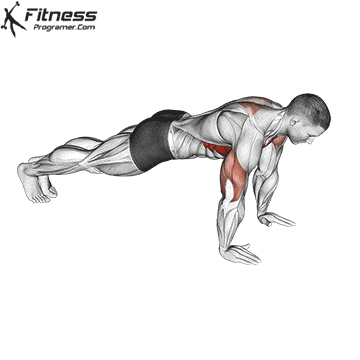
Starting Position:
Begin in a high plank position with hands placed slightly wider than shoulder-width apart.
Keep your body in a straight line from head to heels.
Engage your core and keep your neck neutral.
Lowering Phase:
Inhale as you bend your elbows and lower your chest toward the ground.
Keep your elbows at a 45-degree angle to your torso.
Lower until your chest is just above the floor or as far as mobility allows.
Pressing Phase:
Exhale as you push through your palms to return to the starting position.
Fully extend your arms while maintaining core engagement.
Repetition and Breathing:
Perform controlled reps at a steady pace to maximize muscle engagement.
Tips for Proper Form:
Keep your core tight to prevent your lower back from sagging.
Maintain a straight body line from head to heels.
Avoid locking out your elbows at the top of the movement.
Place your hands firmly on the ground for better stability.
Common Mistakes:
Allowing the Hips to Sag: This reduces core engagement and may strain the lower back.
Flaring the Elbows: Keeping elbows too wide places stress on the shoulders.
Incomplete Range of Motion: Performing half-reps limits muscle activation and strength gains.
Holding the Breath: Breathing properly ensures oxygen flow and better endurance.
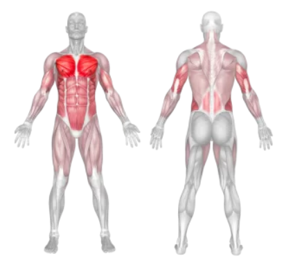
Push up variations: (Im wondering which one your on right now, poredjane su po pregresu i tezini :3)
Wall Push-up
Kneeling Push-up
Close Grip Knee Push-up
Kneeling Diamond Push-Up
Diamond Push-up
Bench Pike Push-up
Push-up Toe Touch
Cross Body Push-up
Drop Push-Up
Decline Push-up
Pike Push-up
Push-Up Plus
Cross Arm Push-up
Hindu Push-ups
Clap Push-Up
Elbow Reverse Push-Up
Incline Push-up
Stability Ball Decline Push-Up
Stability Ball Push-Up
Reverse Push-up
Single-Arm Push-up
One Arm Push Ups With Support
Forearm Push-up
Weighted Push-up
Bosu Ball Push-Up
One Leg Push-Up
Archer Push-Up
Kettlebell Deep Push-Up
Chest Tap Push-up
Finger Push-up
Full Planche Push-Up
Knuckle Push-Up
Modified Hindu Push-up
Push-Up to Renegade Row
Kettlebell Renegade Row
Weighted Vest Push-up
Single-Arm Push-Up on a Medicine Ball
Medicine Ball Push-Up
Single-Arm Medicine Ball Push-Up
Close-grip Dumbbell Push-Up
Suspended Push-Up
Single Arm Raise Push-up
Shoulder Tap Push-up
Cobra Push-up
Straddle Planche
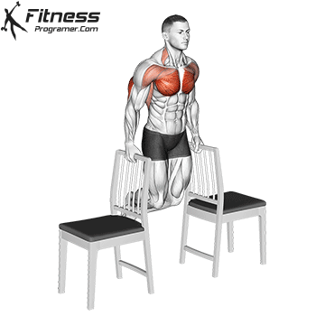
Setup
Choose Sturdy Chairs
Use two stable chairs with firm seats. Ensure they won’t slide or tip during the exercise.
Position the Chairs
Place the chairs parallel to each other, slightly wider than shoulder-width apart.
Execution
Starting Position:
Stand between the chairs and place your hands on the edges of the chair seats.
Lift your feet off the ground and extend your legs forward, keeping them straight or slightly bent.
Lower Your Body:
Slowly bend your elbows, lowering your body until your upper arms are parallel to the floor.
Keep your elbows close to your torso, and avoid flaring them outward.
Push Back Up:
Press through your hands to extend your arms and return to the starting position.
Avoid locking your elbows at the top.
Repeat
Perform 8–12 repetitions for 3–4 sets, maintaining proper form.
Tips for Proper Form
Engage Your Core: Keep your abs tight to stabilize your body.
Maintain Alignment: Avoid leaning too far forward or backward; keep your torso upright.
Control the Movement: Focus on slow, deliberate lowering and pressing motions.
Depth: Only lower your body as far as your shoulder flexibility allows.
Grip: Hold the chair edges firmly but without excessive tension in your wrists.
Common Mistakes
Using Unstable Chairs: Ensure the chairs are sturdy and secure to prevent accidents.
Flaring Elbows: Keep your elbows close to your body to avoid shoulder strain.
Excessive Depth: Lowering too far can overstretch your shoulders and lead to injury.
Sagging Hips: Maintain a straight line from your head to your feet; don’t let your hips drop.
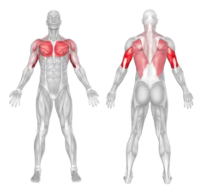
BACK
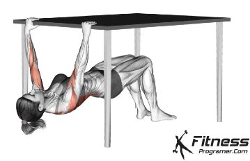
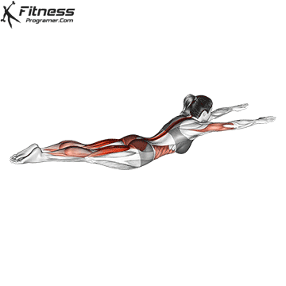
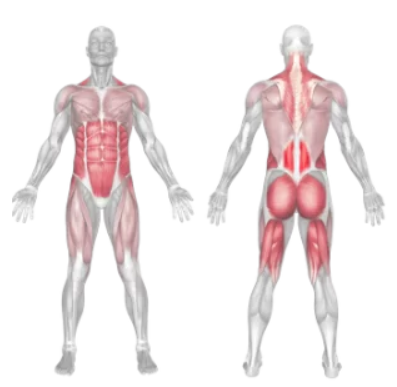
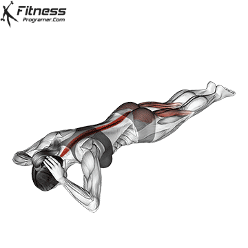
1- Lie face down with your legs together. Place your hands by the side of your head, keeping your shoulders relaxed and your core active. Breathe in.
2- Exhale as you lift your upper body off the floor. Perform the movement slowly, controlling it with your core. Be careful not to jerk your head or strain the muscles of your lower back or neck.
3- Breathe in, hold briefly at the top of the movement, maintaining an active core, then slowly and gently lower yourself back to the start position.
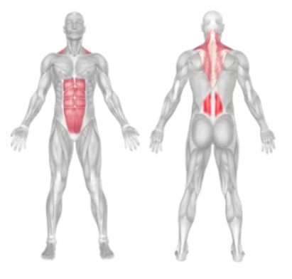
variations: Frog Reverse Hyperextension, Twisting Hyperextension, Flat Bench Hyperextension
TRICEPS
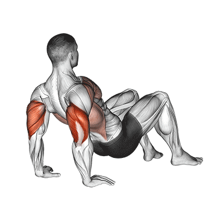
Starting Position:
Sit on the floor with your knees bent and feet flat on the ground.
Place your hands behind you, slightly wider than shoulder-width, with fingers pointing forward or slightly outward.
Lift your hips off the ground so your arms support your upper body weight.
Execution:
Slowly lower your body by bending your elbows until your triceps are parallel to the floor or slightly below.
Keep your elbows close to your body to maximize triceps activation.
Push through your palms and straighten your arms to return to the starting position.
Repeat for the desired number of repetitions.
Repetitions and Breathing:
Perform 10 to 15 repetitions per set.
Inhale as you lower your body and exhale as you push back up.
Tips for Proper Form:
Keep your elbows pointing backward rather than flaring out to the sides.
Avoid locking your elbows at the top of the movement to prevent strain.
Engage your core to maintain stability throughout the exercise.
Move slowly and with control to maximize muscle engagement.
Keep your shoulders down and away from your ears to prevent tension buildup.
Common Mistakes:
Not Lowering Enough: Reduces triceps engagement and limits the effectiveness of the exercise.
Using Momentum: Bouncing up and down minimizes muscle activation and increases injury risk.
Elbows Flaring Out: Shifts the focus away from the triceps and can strain the shoulders.
Hunching Shoulders: Leads to poor posture and unnecessary strain on the neck.
Incorrect Hand Placement: Hands too far back or too close together can cause wrist discomfort.
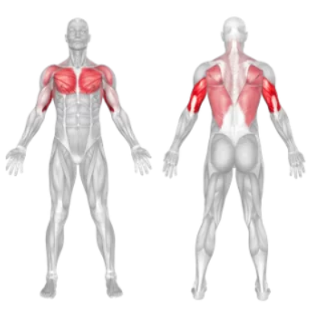